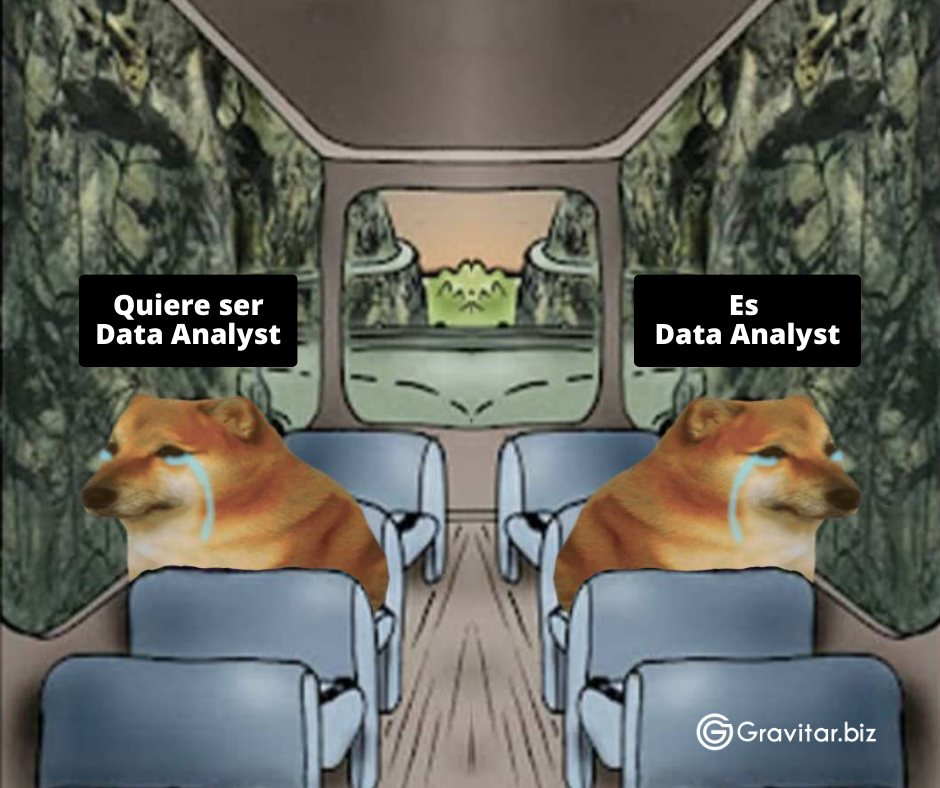
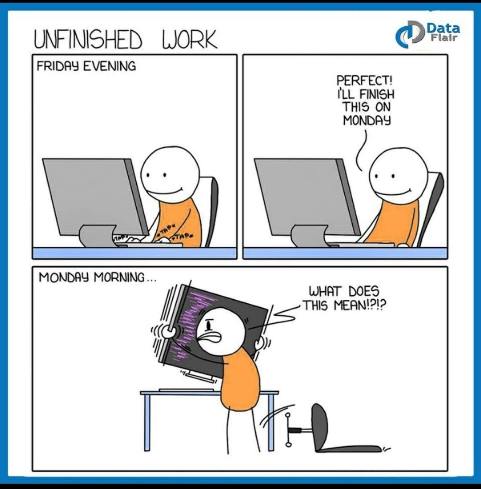

def calcular_estadisticas(df, variable_grupo):
# Calcular estadísticas por grupo
media_por_grupo = df.groupby(variable_grupo).mean()
mediana_por_grupo = df.groupby(variable_grupo).median()
percentil_25_por_grupo = df.groupby(variable_grupo).quantile(0.25)
percentil_75_por_grupo = df.groupby(variable_grupo).quantile(0.75)
# Calcular el rango intercuartilico
rango_intercuartilico = percentil_75_por_grupo - percentil_25_por_grupo
# Unir todos los dataframes
df_final = pd.concat([media_por_grupo, mediana_por_grupo, percentil_25_por_grupo, percentil_75_por_grupo, rango_intercuartilico], axis=1)
# Cambiar los nombres de las columnas
df_final.columns = ['media', 'mediana', 'percentil_25', 'percentil_75', 'rango_intercuartilico']
return df_finalFunciones y la importancia del análisis de datos
Resumen
En este capitulo 3, exploramos conceptos clave para un análisis efectivo de datos y cómo Python, especialmente con módulos como Pandas, se utiliza en iniciativas para abordar temas sociales en la investigación académica. Comenzamos definiendo el análisis de datos como un proceso integral para descubrir información útil, apoyar decisiones y comprender tanto datos numéricos como no numéricos. El proceso implica definir objetivos, seleccionar métricas, recolectar y organizar datos, clasificar y analizar estos datos, e interpretar los resultados, siempre conscientes de posibles sesgos y limitaciones.
Diferenciamos entre análisis cualitativo y cuantitativo, destacando la importancia de ambos en distintos contextos. Examinamos herramientas clave para el análisis de datos, incluyendo Python, R, Power BI, Tableau, Excel, SQL y Qlik, cada una adecuada para diferentes necesidades y habilidades.
A través de ejemplos prácticos y casos de estudio, demostramos cómo el análisis de datos se aplica en la vida real, incluyendo ejemplos en sectores como la banca y la moda. Discutimos el papel de Python en la sociedad, abarcando desde el análisis de datos hasta la investigación social y académica, y presentamos historias de éxito que ilustran su aplicación práctica.
Finalmente, nos centramos en las funciones en Python, destacando su importancia en la reutilización de código y eficiencia. Cubrimos buenas prácticas en la escritura de funciones, como nombres descriptivos, uso de docstrings, y la importancia de funciones dedicadas a una sola tarea. Con ejemplos prácticos, mostramos cómo implementar estas prácticas para funciones específicas, incluyendo una función para identificar números primos, demostrando así la utilidad y flexibilidad de Python en el análisis de datos y programación general.
¿Qué es el análisis de datos?
El análisis de datos es un proceso integral y multifacético que implica examinar, limpiar, transformar y modelar datos con el objetivo de descubrir información útil, llegar a conclusiones y apoyar la toma de decisiones. Este proceso está en el corazón de la investigación académica, las estrategias de mercadotecnia, la gestión de recursos humanos, y se extiende hasta el dominio de la política pública y más allá. Las técnicas estadísticas se aplican para descubrir patrones, identificar relaciones y tendencias, y probar hipótesis. ::: column-margin
Nota: Aunque el análisis de datos puede parecer un campo dominado por números y estadísticas, su alcance va más allá, abarcando interpretaciones cualitativas de textos, imágenes y otros medios no estructurados.
::: ## ¿Cómo se realiza el análisis de datos?
El proceso de análisis de datos puede variar en función del contexto y los objetivos específicos, pero generalmente sigue una estructura lógica y metódica que incluye:
Definición de objetivos: Determinar el propósito del análisis. ¿Qué preguntas específicas estamos tratando de responder? Es esencial establecer metas claras y medibles.
Selección de métricas: Identificar qué datos serán recogidos y cómo. Por ejemplo, al medir los productos más vendidos, considerar aspectos como los canales de marketing, las plataformas de compra y las preferencias del cliente.
Recolección y organización de datos: Adquirir los datos necesarios de fuentes confiables y organizarlos de manera que sean accesibles y manejables para el análisis.
Clasificación y análisis de datos: Utilizar métodos estadísticos y de minería de datos para examinar y modelar los datos.
Interpretación de resultados: Extraer significado de los datos analizados y comunicar los hallazgos de manera efectiva.
Sugerencia: Al interpretar los resultados, es crucial ser consciente de los posibles sesgos y limitaciones de los datos y métodos utilizados.
Tipos de análisis de datos
El tipo de análisis de datos a realizar depende de la naturaleza de la información que se maneja:
- Análisis cualitativo: Se centra en datos no numéricos como textos, entrevistas, imágenes y observaciones. Responde preguntas como “¿Cómo?” y “¿Por qué?” y se preocupa por el contexto y el significado.
- Análisis cuantitativo: Trata con datos numéricos y cuantificables, a menudo utilizando estadísticas y modelos matemáticos para probar hipótesis y predecir tendencias.
Herramientas para el análisis de datos
El análisis de datos se beneficia enormemente de la variedad de herramientas disponibles, cada una con sus fortalezas:
- Power BI: Una herramienta de visualización de datos y business intelligence de Microsoft.
- R: Un lenguaje de programación orientado a la estadística y el análisis de datos.
- Python: Un lenguaje de programación de alto nivel con potentes bibliotecas para análisis de datos como Pandas y NumPy.
- Tableau: Una herramienta de visualización de datos intuitiva para crear dashboards interactivos.
- Excel: Una aplicación de hoja de cálculo versátil y ampliamente utilizada para análisis básicos.
- SQL: Un lenguaje de consulta estructurado para la gestión de bases de datos.
- Qlik: Una plataforma de análisis y visualización de datos orientada al usuario de negocios.
Cada una de estas herramientas tiene su propia curva de aprendizaje y se adapta mejor a diferentes necesidades y habilidades. Por ejemplo, R y Python requieren una base en programación, mientras que herramientas como Power BI y Tableau son más accesibles para los no programadores.
Ejemplo práctico: Para ilustrar cómo estas herramientas pueden ser utilizadas en la vida real, considere un caso de estudio en el que Python se utiliza para analizar tendencias de ventas y luego Tableau para visualizar
!Siempre es importante gestionar el trabajo en equipo cuando empleamos varias herramientas en un mismo trabajo¡
Análisis de datos en la vida real
Existen varios ejemplos de cómo se ha aplicado el análisis de datos en el día a día, aquí mostramos algunos de ellos.
BBVA y la Navidad
Resumiendo, se deseaba determinar en qué gastaban más su dinero los clientes en la época navideña, pues cómo sabemos, es una época en la que los gastos suben. Se puede leer esta investigación en su página siguiendo el siguiente enlace: https://www.bbva.com/es/navidata-gastado-dinero-esta-navidad/
Inditex y videojuegos
La empresa busco a una compañia de videojuegos para que les ayuden en el análisis de datos para así no quedarse atrás. Se puede leer el artículo completo aquí: https://www.lavozdegalicia.es/noticia/galicia-economica/2020/03/01/inditex-ficha-experta-videojuegos-explotar-mina-oro-big-data/00031583073737230198202.htm
Existen muchas más historias relacionadas al análisis de datos, aunque no es fácil llegar a ser considerado un “analista de datos”, con dedicación se puede lograr mucho en este campo que esta emergiendo rápidamente.

Python y sus usos en la sociedad
Como sabemos Python es un lenguaje muy usado en la actualidad, el mismo puede ser aplicado a muchos campos. Si entramos a temas sociales Python puede ser usado en:
- Análisis de datos
- Investigación social y académica
- Visualizar datos
- Procesamiento de lenguaje natural
- Desarrollo de aplicaciones
- Análisis en redes sociales
Por lo que Python es una herramienta escencial al momento de querer realizar análisis de datos, nos facilita la comprensión y nos da una forma de abordar los poblemas.
Historias de éxito con Python
La pergunta que todos se hacen es: ¿sirve Python en el mundo real? La respuesta es sí, muchos avances se han logrado con este lenguaje, es por ello que hemos puesto aquí algunos de ellos.
Caso de Gusto.com
Empezó como un sitio de viajes en línea llamado EZTrip.com, evolucionó para ofrecer servicios de reserva y también se diversificó con contenido de reseñas de viajes, blogs y fotos. La compañía utiliza sistemas de reserva en línea y se enfrenta a desafíos al integrar sistemas antiguos basados en mainframes y sistemas más modernos mediante técnicas como “screen scraping”. Han adoptado Python para facilitar la integración y mejorar la eficiencia en tareas diarias.
¿Por qué Python?
Los sistemas de reserva basados en mainframes presentan limitaciones en la entrada de datos y formatos, lo que hace que el uso de Python sea crucial en tareas como procesamiento de texto, limpieza de datos y desarrollo rápido. Python ha sido fundamental en la construcción de una red social para viajeros y en la transición hacia un modelo de contenido generado por usuarios.
Gusto.com utiliza Python para procesar grandes conjuntos de datos de manera eficiente, como en la creación de un sistema de localización para descripciones de hoteles. Python también ha sido efectivo en la integración de servicios web de proveedores, y se ha destacado por su capacidad de desarrollo rápido y sus herramientas de procesamiento de XML.
La elección de Python se basó en su portabilidad, acceso al código fuente, capacidad de integración, desarrollo rápido, soporte para optimización selectiva, scriptabilidad y facilidad de aprendizaje. Además, la comunidad de Python y la independencia del sistema operativo han sido aspectos beneficiosos para Gusto.com. Python ha demostrado ser una herramienta clave en el éxito y crecimiento de Gusto.com en el espacio de viajes en línea.
Puedes leer el artículo completo en: https://www.python.org/about/success/gusto/
Strakt y Python
Strakt, ha tenido éxito con el proyecto CAPS (Collaborative Approach to Problem Solving). Este proyecto, ofrece soluciones modulares de colaboración y flujos de trabajo, utilizando Python como lenguaje principal.
¿ Por qué Python?
Python fue elegido por su portabilidad, acceso al código fuente, capacidad de integración con sistemas existentes, desarrollo rápido, soporte para optimización selectiva, scriptabilidad y por ser fácil de aprender. A pesar de ser nuevos en Python, los desarrolladores de Strakt encontraron que el lenguaje era fácil de aprender y aumentaba la productividad. Python también influyó positivamente en el proceso de diseño y facilitó las revisiones de código.
El proyecto CAPS fue exitoso, y la implementación se desplegó en una universidad sueca como cliente beta. La elección de Python ha sido fundamental para el éxito de Strakt en el desarrollo de soluciones colaborativas y de flujo de trabajo.
Se puede encontrar el resumen completo en: https://www.python.org/about/success/strakt/
Como podemos observar el uso de Python es diverso, pero ahora entremos en el uso de la librería pandas. Veamos esta divertida forma de aprender su uso
Historias de éxito como las de Gusto.com y Strakt ilustran cómo Python, con su amplia gama de bibliotecas y comunidad activa, es fundamental en la integración de sistemas complejos y en el procesamiento eficiente de grandes conjuntos de datos. La capacidad de Python para trabajar con texto, números, imágenes y datos complejos lo convierte en una herramienta versátil y potente para el análisis de datos.
Pandas y Pokémon
Para todos los interesados en aprender más sobre análisis de datos utilizando Python, especialmente con la biblioteca Pandas, hay una oportunidad emocionante y única que no deben perderse. Les invito a explorar el enlace: Aprende Pandas con Pokémon. Esta guía combina el aprendizaje práctico de Pandas, una herramienta esencial en el análisis de datos con Python, con el atractivo y la familiaridad del mundo de Pokémon.
Es una forma excelente y divertida de entender los conceptos fundamentales de Pandas, aplicándolos a un conjunto de datos interesante y amigable. Ideal tanto para principiantes en Python como para aquellos que buscan solidificar sus habilidades en el manejo de datos, este recurso ofrece una experiencia de aprendizaje interactiva y atractiva. ¡No dejen pasar la oportunidad de mejorar sus habilidades en análisis de datos con este recurso único!
Este divertido post lo puedes encontrar en: https://www.kaggle.com/code/ash316/learn-pandas-with-pokemons
El mismo ayuda a entender las bases del análisis de datos de una manera más amigable.
El análisis de datos ha revolucionado innumerables campos, desde la academia hasta la industria, ofreciendo insights profundos y conduciendo a decisiones informadas. Python, como herramienta open source y lenguaje amigable, ha jugado un papel crucial en esta revolución. Su simplicidad y poder han permitido a analistas y científicos de datos de todos los niveles, desde principiantes hasta expertos, procesar, analizar y visualizar datos de manera efectiva.
Beneficios de Mantener el Trabajo Ordenado y Reproducible con Python y Visual Studio Code
Mantener un trabajo de análisis de datos ordenado y reproducible es fundamental para la integridad y eficacia de cualquier proyecto. Python, en conjunto con herramientas como Visual Studio Code, facilita esta tarea. La reproducibilidad no solo es crucial para validar resultados, sino también para compartir hallazgos y colaborar con otros. Al trabajar con Python en un entorno como Visual Studio Code, se beneficia de:
Estandarización del Código: Python promueve un estilo de codificación claro y coherente, respaldado por las directrices de PEP 8. Esto hace que el código sea más legible y fácil de mantener, tanto para el autor original como para otros colaboradores.
Documentación y Comentarios: Visual Studio Code, con sus características de edición y anotación, facilita la documentación del código, lo cual es esencial para explicar los procesos y decisiones tomadas durante el análisis.
Control de Versiones: Integraciones de control de versiones como Git en Visual Studio Code permiten rastrear y gestionar cambios en el código, lo que es vital para la reproducibilidad y colaboración.
Entornos Virtuales: Visual Studio Code permite gestionar entornos virtuales de Python, lo que asegura que los proyectos se ejecuten con las dependencias correctas y evita conflictos entre proyectos.
Facilidad de Depuración: Las herramientas de depuración integradas en Visual Studio Code permiten identificar y corregir errores más rápidamente, lo cual es crucial en el análisis de datos para asegurar la precisión de los resultados.
En resumen, Python y Visual Studio Code forman un dúo poderoso para el análisis de datos, ofreciendo un entorno eficiente, reproducible y colaborativo. La combinación de la simplicidad y potencia de Python con las avanzadas características de Visual Studio Code empodera a los analistas y científicos de datos para abordar proyectos complejos con mayor eficacia y transparencia.
Funciones: Análisis de Datos Agrupados por Sexo del dueño de los establecimientos en Ecuador
Cuando se trabaja con conjuntos de datos en Python, especialmente con DataFrames de Pandas, una tarea común es realizar análisis estadísticos agrupados por ciertas categorías. En esta sección, nos centraremos en un DataFrame que incluye variables como ventas, número de empleados, compras e impuestos. Vamos a explorar cómo se puede utilizar Python para calcular estadísticas clave como la media, la mediana, y los percentiles 25 y 75, agrupando los datos según el sexo del dueño de los establecimientos en Ecuador.
Creando el DataFrame
Supongamos que tenemos un DataFrame llamado df_negocios con las siguientes columnas: ‘ventas’, ‘num_empleados’, ‘compras’, ‘impuestos’, y ‘sexo_dueno’. Este DataFrame representa diversos establecimientos con sus respectivos datos financieros y demográficos.
Cálculo de Estadísticas Agrupadas
Para realizar nuestro análisis, utilizaremos la función groupby de Pandas, que nos permite agrupar datos en base a una columna específica (en este caso, ‘sexo_dueno’) y luego aplicar funciones de agregación a las demás columnas numéricas.
1. Media por Grupo
La media es un indicador central que nos da una idea del valor ‘promedio’ de nuestras variables numéricas para cada grupo.
2. Mediana por Grupo
La mediana es el valor medio que divide nuestro conjunto de datos en dos mitades iguales. Es especialmente útil cuando los datos contienen valores extremos que pueden distorsionar la media.
3. Percentil 25 por Grupo
El percentil 25, también conocido como primer cuartil, indica el valor por debajo del cual se encuentra el 25% de los datos.
4. Percentil 75 por Grupo
El percentil 75, o tercer cuartil, muestra el valor por debajo del cual se encuentra el 75% de los datos.
Aplicación práctica de las funciones
Esta técnica de agrupación y cálculo de estadísticas es fundamental en el análisis de datos, ya que permite desglosar y entender mejor las tendencias y patrones dentro de subgrupos de nuestro conjunto de datos. Al entender cómo diferentes categorías (como el sexo del dueño del establecimiento en este caso) pueden influir en las variables numéricas de un negocio, podemos obtener insights valiosos para la toma de decisiones estratégicas y políticas comerciales.
Ahora, en tu negocio, o investigación, usualmente tienes más de una variable categórica como es sexo_dueno y para cada una de ellas, o para combinaciones de ella vamos a querer realizar estas cuatro operaciones, o incluso más operaciones a nivel de grupos. Imaginate que tenemos las variables: tipo_cliente que puede tomar valores persona natural, sociedad, contribuyente especial; genero_empleado que puede tomar valores de masculino, femenino, otro. Si quiseramos realizar las cuatro operaciones sobre estas variables tendriamos que repetir el código y en total tendríamos ! 12 lineas de código ¡. Mejor usemos una función que nos permita hacer estás operaciones para hacer nuestro código más legible y reproducible y además incluyamos otras operaciones interesantes.
Fijate como en esta función toma como argumentos un DataFrame y el nombre de la variable de grupo. Calcula la media, mediana, percentil 25, percentil 75 y rango intercuartilico por grupo. Luego, une todos estos DataFrames en uno solo y cambia los nombres de las columnas para reflejar las estadísticas calculadas. Finalmente, devuelve el DataFrame final. Sobre todo fijate que para cada operación usamos comentarios para saber que hace nuestra función de forma interna.
Ahora la aplicación con el dataframe que estamos utilizando quedaría como:
Genial, ahora podemos extender el uso de nuestro función para un conjunto de variables categoricas adicional a lo largo de nuestro análisis.
La importancia de la documentación
El uso de funciones y métodos en Python, como groupby, mean, median, y quantile, no solo facilita la realización de análisis estadísticos complejos sino que también asegura que nuestro trabajo sea reproducible y eficiente. Este enfoque ordenado y metódico es esencial para cualquier científico de datos o analista que busque extraer el máximo valor de sus datos.
Para eso empleamos funciones, aquí un ejemplo sencillo de una:
Ten en cuentaa las siguientes consideraciones dentro de las buenas prácticas para escribir funciones en Python:
Nombres descriptivos: Los nombres de las funciones deben ser descriptivos y seguir la convención de nombres en Python (snake_case para las funciones).
Docstrings: Siempre debes documentar tus funciones con docstrings. Los docstrings ayudan a otros desarrolladores a entender qué hace tu función y cómo usarla.
Un solo trabajo: Cada función debe hacer una sola cosa. Si una función está haciendo varias cosas, considera dividirla en varias funciones.
Parámetros: Evita usar un gran número de parámetros en tus funciones. Si una función necesita muchos parámetros, puede ser una señal de que la función está haciendo demasiado.
Valores de retorno: Siempre que sea posible, las funciones deben devolver valores en lugar de imprimirlos directamente. Esto hace que las funciones sean más reutilizables.
Evita usar variables globales: Las funciones deben evitar depender de variables globales. En su lugar, pasa los valores que la función necesita como parámetros.
Una función en programación actúa como una herramienta para encapsular código que realiza una tarea específica. Al definir una función, estás creando un bloque reutilizable de código que puede ser invocado en cualquier momento y en diferentes partes de tu programa. Esto tiene varias ventajas clave para mantener tu código limpio, ordenado y eficiente:
Reutilización de Código: En lugar de repetir las mismas líneas de código cada vez que necesitas realizar la misma tarea, puedes llamar a una función que ya realiza esa tarea. Esto no solo ahorra tiempo sino que también reduce la posibilidad de errores.
Organización y Legibilidad: Las funciones ayudan a segmentar tu código en bloques lógicos y bien definidos. Cada función debe tener un propósito claro y estar separada de otras partes del código. Esto hace que tu código sea más fácil de leer y entender, tanto para ti como para otros desarrolladores.
Mantenimiento y Actualizaciones: Si necesitas cambiar la forma en que se realiza una tarea específica, solo necesitas modificar la función correspondiente. Esto es mucho más eficiente que buscar y actualizar múltiples instancias del mismo código.
Recordatorio de tu Trabajo: Al utilizar funciones bien documentadas, creas una especie de documentación en el código que te ayuda a recordar lo que hace cada parte del programa. Los nombres descriptivos de las funciones y los comentarios (docstrings) ayudan a mantener claro el propósito y funcionamiento del código.
En resumen, las funciones son esenciales para escribir código eficiente, limpio y fácil de mantener. Permiten una mejor organización, facilitan la reutilización y ayudan a mantener un registro claro de lo que hace tu programa.

Aquí hay un ejemplo de una función escrita siguiendo estas prácticas:
def calcular_promedio(numeros):
"""
Calcula el promedio de una lista de números.
Args:
numeros (list): Una lista de números.
Returns:
float: El promedio de los números.
"""
suma = sum(numeros)
promedio = suma / len(numeros)
return promedioEsta función es clara, hace una sola cosa, tiene un docstring útil, y no depende de ninguna variable global.
Retomando el ejemplo que estabamos viendo anteriormente y habiendo recorrido las buenas prácticas de programación tenemos la siguiente función:
def funcion_ejemplo(variable_cat):
"""
Calcularemos la suma y contaremos cuantos elementos hay en la variable categótica.
Args:
variable_cat: nombre columna del data frame
Returns:
promedio de la variable categórica
"""
suma = df.groupby(variable_cat).agg({'tipo_item': 'sum'})
cuenta = df.groupby(variable_cat).count()
promedio = suma/cuenta
return promedioEsta función nos ayuda a realizar las acciones que habíamos planteado anteriormente, para usarla solamente debemos llamar a la función de la siguiente manera:
variable_cat('ventas')
variable_cat('salidas')
variable_cat('entradas')
promedio_uno = variable_cat('devoluciones')Vamos a crear una función que nos permite identificar si un número es primo
Primero definamos qué es un número primo, de forma sencilla, es un número que es divisible para sí mismo y para el número 1. Aquí es donde entra el operador % que devuelve el residuo de la división entre dos números.Pongamos un ejemplo, si dividimos el número primo 17 entre 2, obtenemos un residuo de 1, en cambio si lo dividimos entre 17 mismo obtenemos un residuo de 0; esta es la lógica que usaremos para crear nuestra función.
def verificar_primo(numero):
"""
Verfica si un numero es primo o no.
Args:
numero (float): Un número cualquiera.
Returns:
Booleana: True si es verdad, False caso contrario
"""
for i in range(2,numero):
if (numero%i) == 0:
return False
return True
Esta función es muy básica pero ayuda a comprender mejor tipos de variables, estructuras y la lógica tras la programación; esta función se ha explotado mucho así que te animo a uscar formas de realizar lo mismo pero optimizandola.